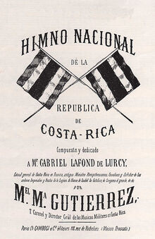
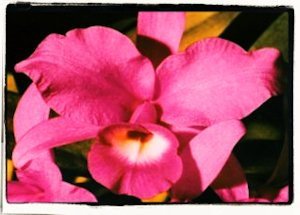
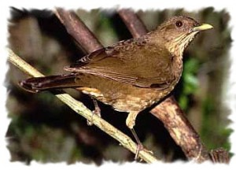

SIMBOLOS PATRIOS
Bandera Nacional
Fue creada el 29 de septiembre de 1848, el diseño de la actual bandera correspondió a Doña Pacífica Fernández
Oreamuno.
El significado de los colores:
Azul: El cielo que cubre Costa Rica
Blanco: La paz que se vive en Costa Rica y la pureza de sus ideales.
Rojo: La energía, la valentía, y el desprendimiento con que los costarricenses defienden sus principios e ideales.

Escudo Nacional
El Escudo Nacional representa tres volcanes y un extenso valle entre dos océanos y en cada un
o de éstos un buque mercante. En el extremo izquierdo de la línea superior que marca el horizonte
habrá un sol naciente. Cerrarán el escudo dos palmas de mirto verde, unidas por una cinta ancha color
blanco y contendrá en letras doradas la leyenda: "República de Costa Rica". El espacio entre el perfil
de los volcanes y las palmas de mirto ocuparán siete estrellas de igual magnitud, colocadas en arco que
representarán
las provincias de San José, Alajuela, Cartago, Heredia, Guanacaste, Puntarenas y Limón.
El remate del escudo lo formará una cinta azul en forma de corona en la cual en letras plateadas
figurará la leyenda "América Central". El escudo fue promulgado el 29 de septiembre de 1848, durante
la administración del Dr. José María Castro Madriz. Este escudo ha sufrido dos cambios: se le quitaron
todos los elementos bélicos que tenía y luego
se le agregaron dos estrellas más para completar las siete, una por cada provincia.

Himno Nacional
Noble patria, tu hermosa bandera es el himno nacional de Costa Rica desde 1852. Su música fue compuesta por Manuel María Gutiérrez Flores, quien dedicó la partitura al francés Gabriel-Pierre Lafond. La música fue creada para recibir a delegados de Gran Bretaña y Estados Unidos en ese año. Ha tenido varias letras; la actual fue escrita para un concurso convocado en 1903 por el gobierno de don Ascensión Esquivel Ibarra, para darle al himno una letra que reflejara la idea de ser costarricense. El concurso lo ganó José María Zeledón Brenes. Fue declarado oficial en 1949, bajo el gobierno de José Figueres Ferrer.
La Flor Nacional
La guaria morada fue designada flor nacional en el gobierno de León Cortés Castro el 15 de junio de 1939. Ella simboliza la belleza del pueblo costarricense y crece en casi todo el país.
El Ave Nacional
El Yigüirro: (Turdus grayi) fue declarada ave nacional como un tributo a su canto potente y melodioso que acompaña la entrada de la época lluviosa. El proponente de la idea fue Elíseo Gamboa Villalobos. La declaratoria se dio por medio de la Ley No. 6031 del 3 de enero de 1977. El Turdus Grayi, es uno de los mejor conocidos porque, aparte de su abundancia, es muy notable por su canto a principios de la época lluviosa y ha sido elegido como el Ave Nacional de Costa Rica. Hay otras especies que también hubieran podido optar por ese título, pero finalmente al yigüirro le correspondió ese honor. Las razones que motivaron la declaratoria del yigüirro como Ave Nacional, se basa en lo familiar que éste pájaro ha sido para los costarricenses desde hace mucho tiempo, debido precisamente, a que habita muy cerca de las casas y su nombre es mencionado a menudo en canciones típicas, cuentos y obras literarias de autores costarricenses, como “Juan Varela” y “Marcos Ramírez”.
